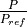

Combustion engine¶
We have added a combustion engine in version 0.0.5 of TESPy. The combustion
engine is based on the combustion chamber, and additionally provides a power
as well as two heating outlets and heat losses can be taken into account, too.
Power output, heat production and heat losses are all linked to the thermal
input of the combustion engine by characteristic lines, which usually are
provided by the manufacturer. TESPy provides a set of predefined
characteristics (documented in the <tespy.data> module).

Figure: Topology of the combustion engine.¶
The characteristics take the power ratio (

) as argument. For a design case simulation the power ratio is always assumed to be equal to 1. For offdesign calculation TESPy will automatically take the rated power from the design case and use it to determine the power ratio. Still it is possible to specify the rated power manually, if you like.In contrast to other components, the combustion engine has several busses, which are accessible by specifying the corresponding bus parameter:
TI (thermal input),
Q (total heat output),
Q1 and Q2 (heat output 1 and 2),
QLOSS (heat losses) and
P (power output).
If you want to add a bus to the example from the tespy_examples repository, your code could look like this:
chp = CombustionEngine('chp')
b = Bus('some label')
# for thermal input
b.add_comps({'comp': chp, 'param': 'TI'})
# for power output
b.add_comps({'comp': chp, 'param': 'P'})
Enjoy fiddling around with the source code of the combustion engine in the examples repository!